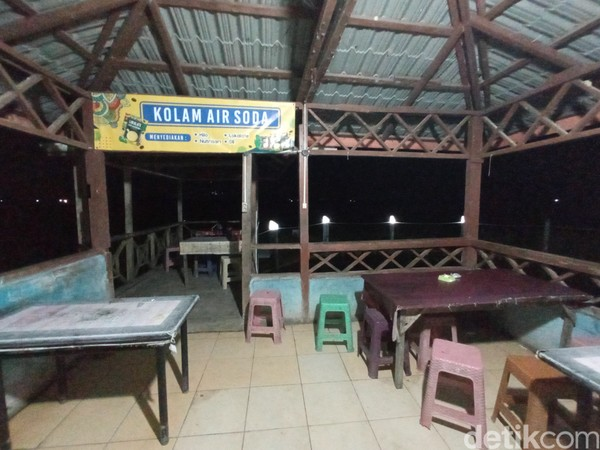

Caritahu tentang akses ke objek wisata
Dilihat dari akses atau rute perjalananya, Air Soda ini terbilang terjangkau dan mudah untuk diakses jalan dan infrastrukturnya pun baik. Adapun lokasi kolam pemandian alam air soda tidak jauh dari pusat kota Tarutung yaitu kurang lebih 3 km.
Dengan waktu tempuh sekitar 10 menit. Pemandian ini bisa ditempuh dengan menggunakan angkutan umum maupun becak, adapun tarif ongkos yang ditetapkan dari ibukota kabupaten menuju objek wisata Air Soda adalah sekitar Rp 5.000 untuk moda angkutan umum dan Rp 10.000 - Rp15.000 untuk moda becak motor.
Prasarana jalan menuju pemandian air soda Tarutung bisa dibilang cukup baik karena keseluruhan jalan sudah sepenuhnya beraspal sehingga wisatawan mudah untuk mengendarai kendaraanya menuju lokasi. Sebelum pemandian air soda dibuka untuk umum, akses jalan menuju Desa Parbubu I sudah ada dan sudah di aspal. Ketersediaan transportasi juga menjadi pendukung jika berkunjung ke air soda karena trasnportasi menuju air soda cukup mudah diakses.
Adapun jarak dari ibukota kabupaten menuju objek wisata air soda adalah sekitar 3 km dan jarak dari ibukota provinsi sekitar 280 km. Perjalanan menuju Desa Parbubu I dari Kota Medan dapat ditempuh melalui perjalanan darat baik menggunakan kendaraan pribadi maupun moda transportasi umum, selain itu juga dapat ditempuh melalui perjalanan udara melalui Bandara Kuala Namu menuju Bandara Silangit sekitar 1 jam perjalanan menuju ke Tarutung
Caritahu tentang fasilitas yang tersedia
Fasilitas yang ada di obyek wisata Pemandian Alam Air Soda memang tidak terlalu lengkap, namun ada beberapa yang bisa anda temui, seperti:
Lahan parkir
Bagi anda yang membawa kendaraan pribadi baik mobil atau motor, anda tidak perlu khawatir dengan masalah parkir karena di sana telah disediakan area parkir yang lumayan luas dan juga memadai.
Warung atau tempat makan

Berendam di kolam pemandian dan menikmati panorama selama berjam-jam pastinya membuat perut anda lapar. Tak perlu bingung apabila anda tidak ada waktu atau lupa untuk menyiapkan bekal. Di sekitar obyek wisata ini anda dapat menemukan warung-warung milik penduduk lokal yang menjual makanan dan minuman dengan harga terjangkau.
Gazebo

Dengan dibangunnya gazebo-gazebo di sana, anda bisa dengan santai duduk-duduk bersama keluarga sembari menikmati pemandangan air kolam pemandian dan alam di sekitarnya.
Kamar mandi dan kamar ganti

Bagi pengunjung yang telah selesai berendam di kolam pemandian dapat segera berbilas di kamar mandi lalu berganti baju di kamar ganti yang telah disediakan.